Dense 3D reconstruction has demonstrated immense potential for spatial understanding, yet its viability as a real-time, onboard representation for autonomous driving remains an open challenge. Existing large-scale visual geometry models typically require substantial computational resources and lack the long-range geometric fidelity, surround-view consistency, and real-time efficiency demanded by dynamic driving environments. To bridge this gap, we present LiAuto-GeoX, an efficient grounded driving transformer designed for deployable, ego-centric 3D scene understanding. Our approach begins by learning a high-capacity driving geometry model from large-scale surround-view data, utilizing sparse LiDAR priors to provide robust geometric grounding in distant, ambiguous, or structure-sparse regions. We then instantiate this capability into a highly compact 155M-parameter onboard model through a novel geometry-preserving distillation framework. This framework employs mask-guided depth-aware distillation to retain fine-grained metric structures by emphasizing geometrically informative regions, and relative-pose relational distillation to enforce cross-view spatial consistency through pose-induced geometric relations. Extensive evaluations reveal that LiAuto-GeoX runs at 220 FPS on KITTI while maintaining high-fidelity dense reconstruction, enabling real-time deployment. The learned geometry transfers seamlessly to downstream autonomy tasks, achieving 90.6 PDMS in trajectory prediction, 24.63 mIoU in occupancy prediction, and 47.67 IoU in future-frame prediction. These all demonstrate that efficient dense 3D reconstruction can transcend its traditional role as a perception target to serve as a scalable, foundational geometric representation for next-generation autonomous driving.
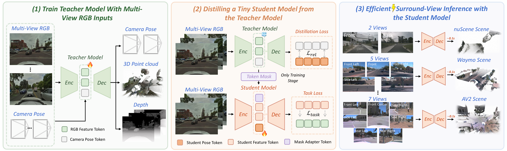
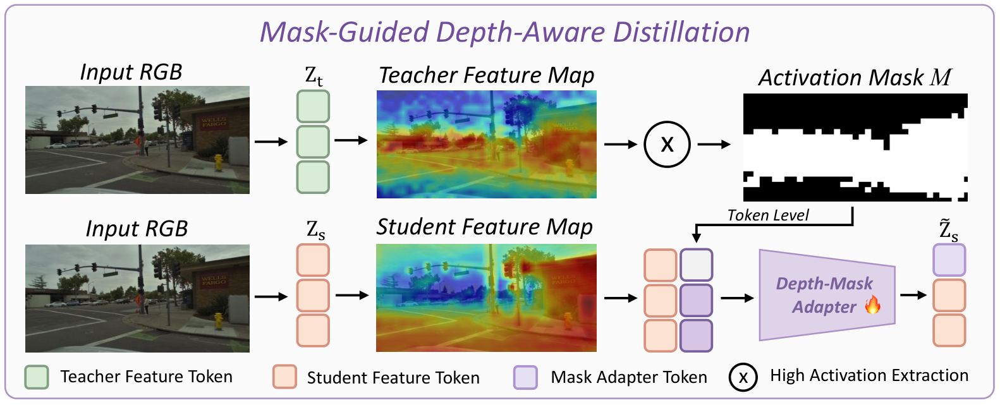
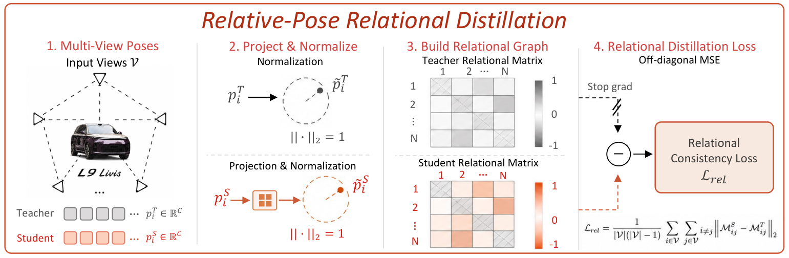
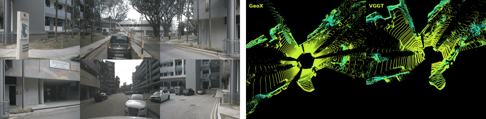
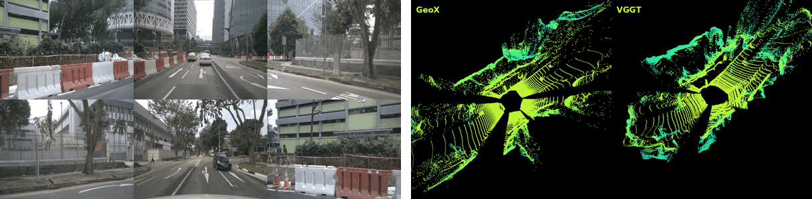
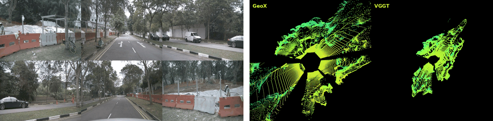
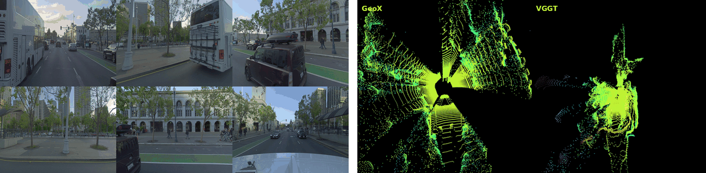
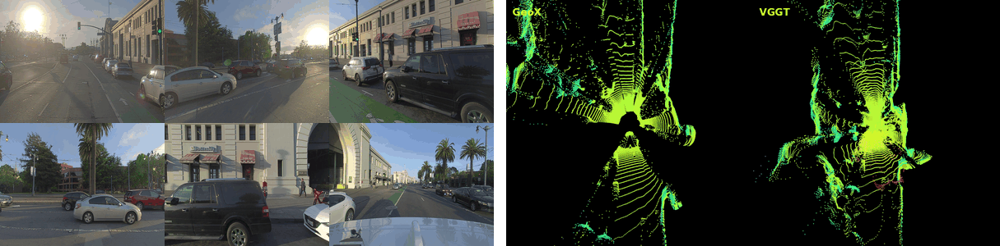
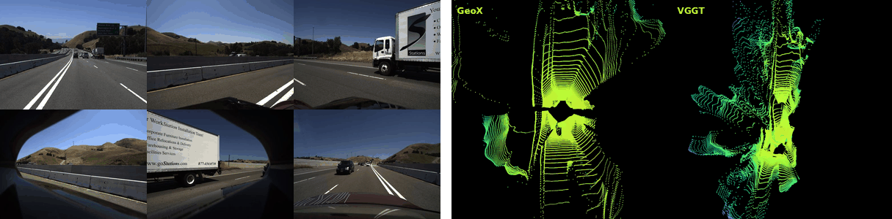
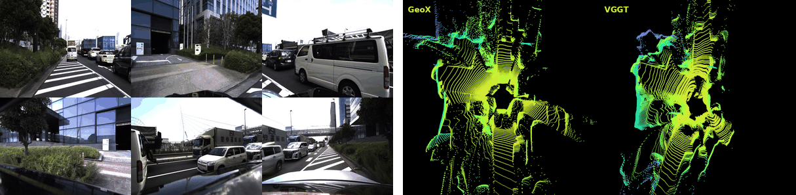
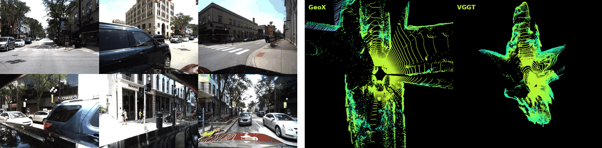
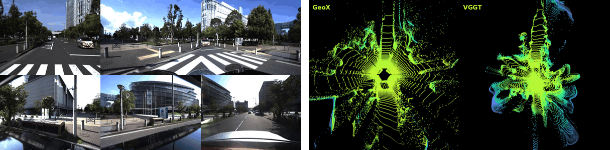
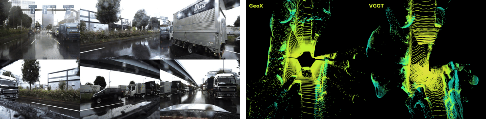
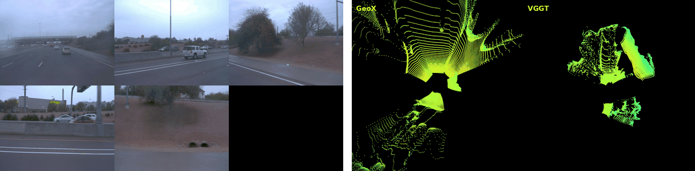
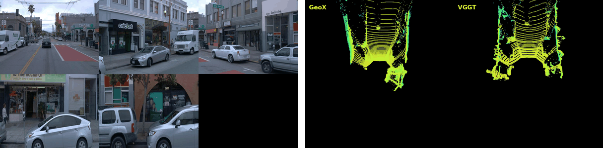
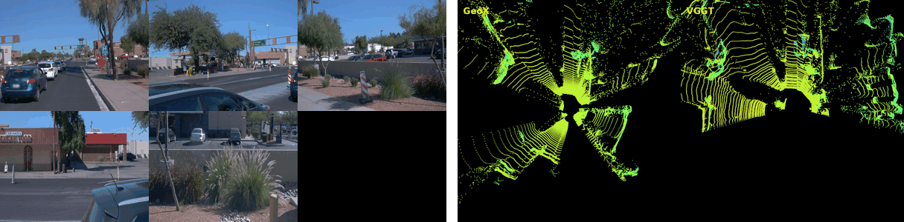
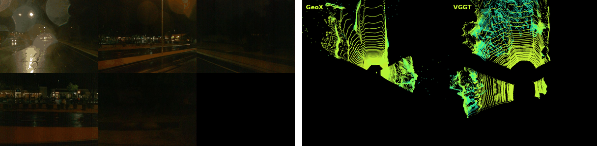
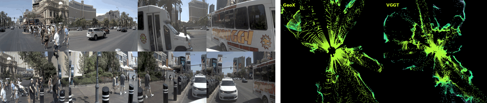
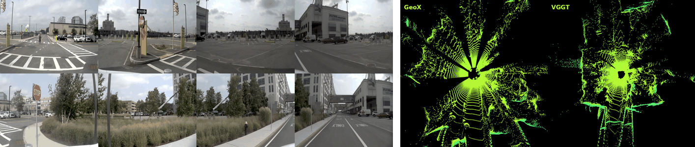
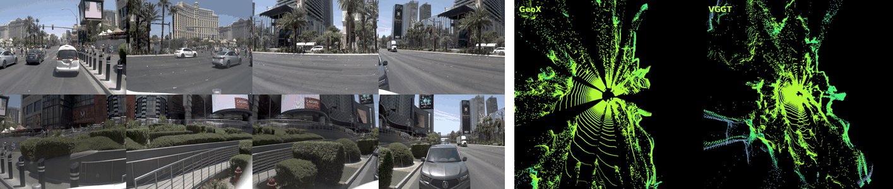
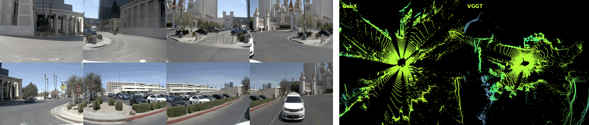
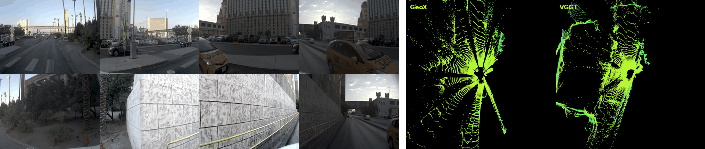
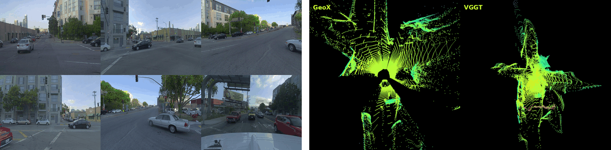
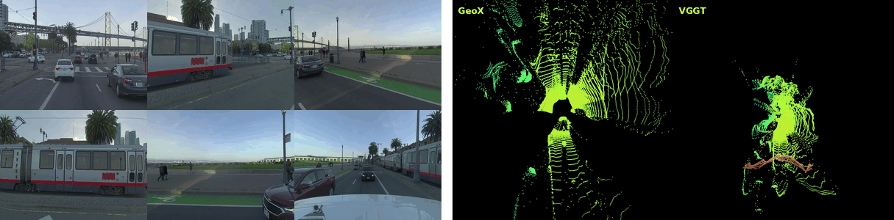
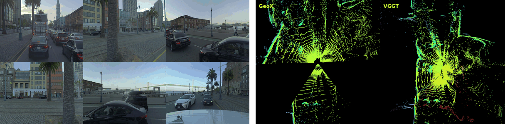
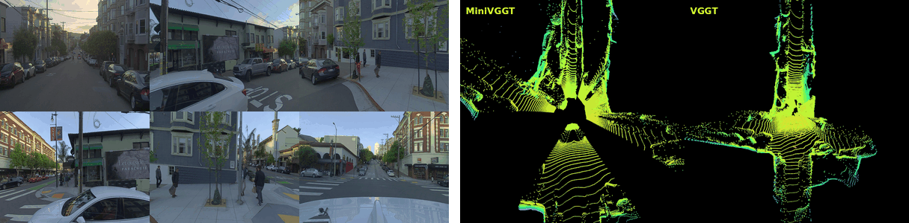
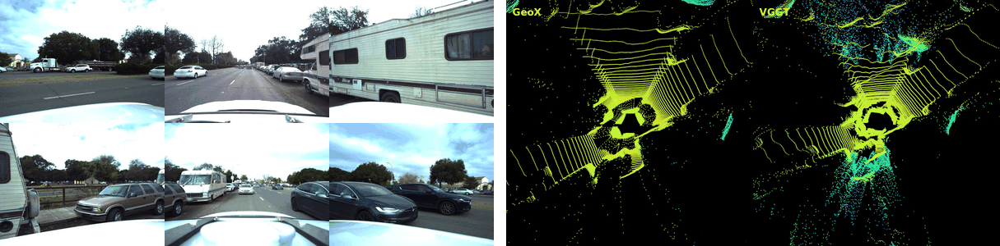
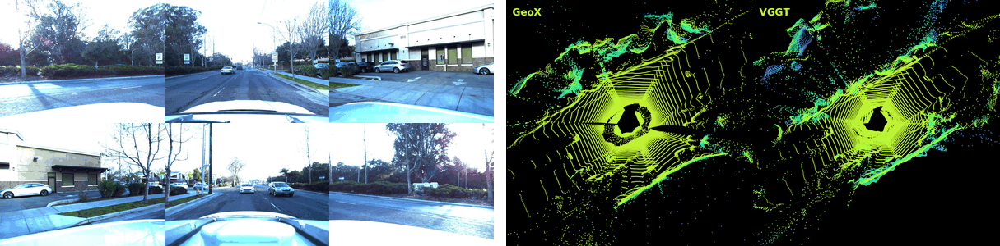
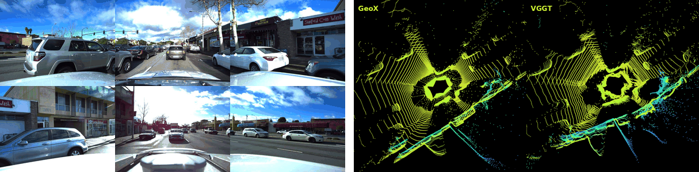
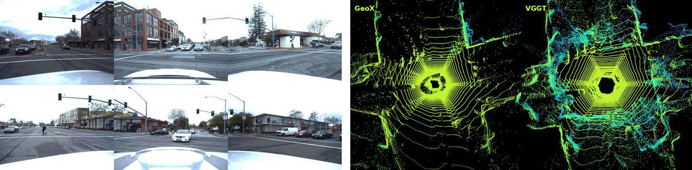
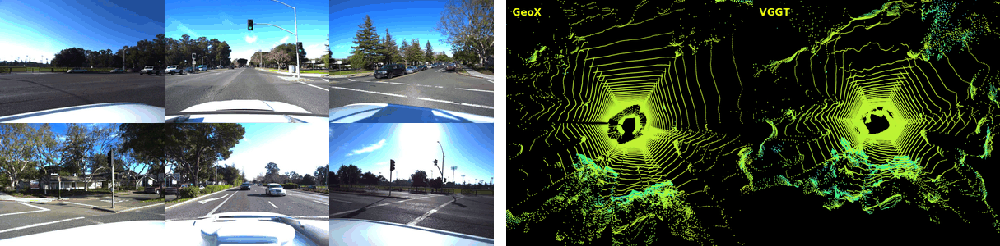
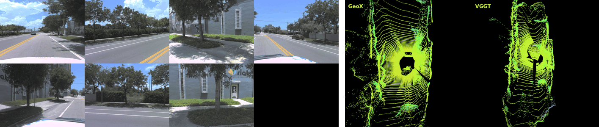
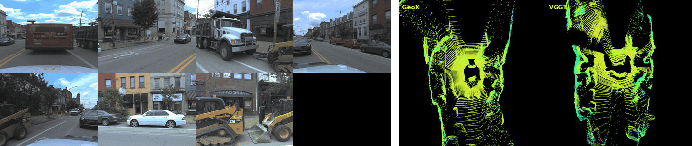
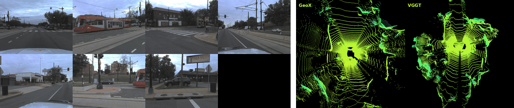
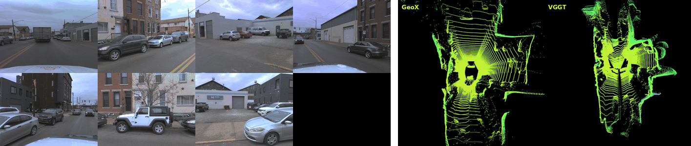
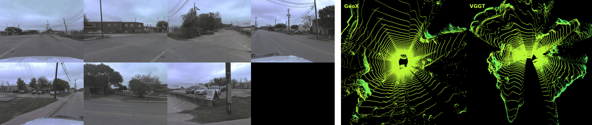
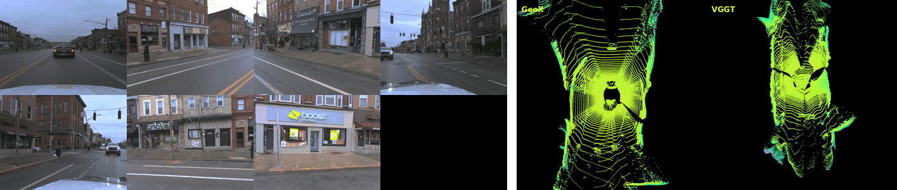
Scene 1057
Scene 1091
@article{park2021nerfies,
author = {Park, Keunhong and Sinha, Utkarsh and Barron, Jonathan T. and Bouaziz, Sofien and Goldman, Dan B and Seitz, Steven M. and Martin-Brualla, Ricardo},
title = {Nerfies: Deformable Neural Radiance Fields},
journal = {ICCV},
year = {2021},
}